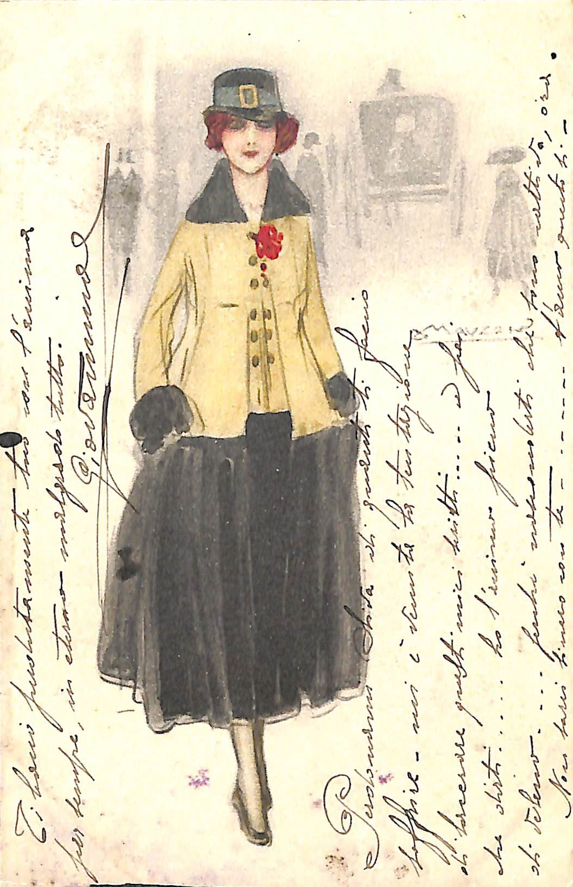

Donna in città
Cartolina 118
Fronte cartolina 118

Descrizione
Sul fronte della cartolina è raffigurata una donna dai capelli rossi che passeggia in città. La donna indossa una giacca gialla con una spilla a forma di fiore rosso e scarpe, calze e cappello neri. La donna è raffigurata con gli occhi chiusi. Alle sue spalle ci sono le ombre di persone e di una carrozza. Inoltre è presente la firma dell'artista.
Retro cartolina 118

Dati principali
| Mittente | Destinatario | Artista cartolina |
|---|---|---|
| Giovanni Coliola | Olivia Turtura | Achille Luciano Mauzan |
- Nota sulla cartolina: la cartolina non reca data di stampa.
- Nota sulla cartolina: non viene specificata la data in cui è stata scritta la cartolina.
- Nota sul mittente: non è presente il cognome del mittente.
- Nota sul destinatario: non sono presenti il cognome e l'indirizzo del destinatario.
- Nota sull'artista: sul fronte è presente la firma dell'artista
Note sulla cartolina 118
Fare click o doppio click per mostrare le altre informazioni sulla cartolina
- Luogo di conservazione: Museo Civico Etnografico "Giovanni Podenzana", Sezione dei cimeli garibaldini e della Prima Guerrra Mondiale, Città: La Spezia, Paese: Italia
- Codice identificativo: 7694_118_001/002
- Materiale: Carta
- Dimensioni: altezza: 9, larghezza: 14 cm
- Stato di conservazione: Buono
- Disponibilità: Disponibile solo su licenza
- Lingua: Italiano